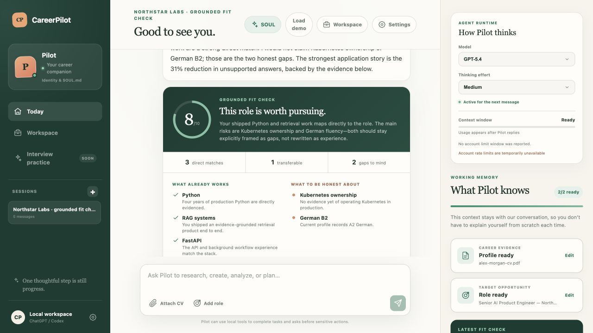
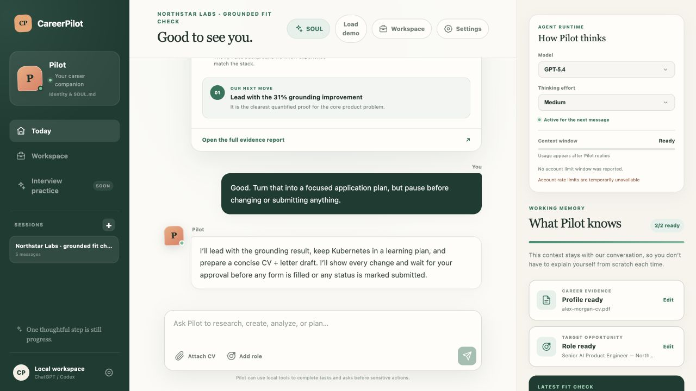
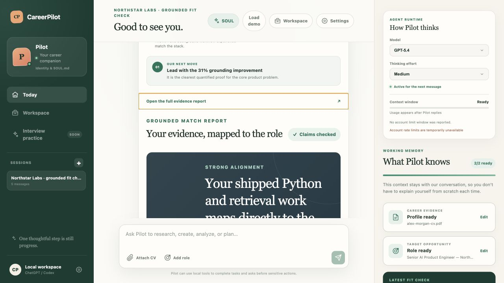
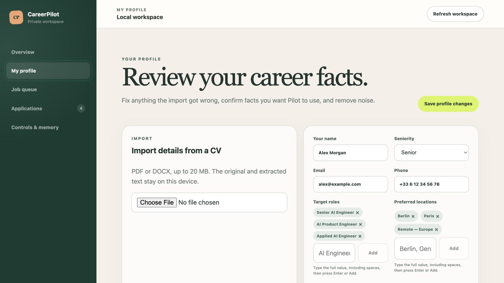
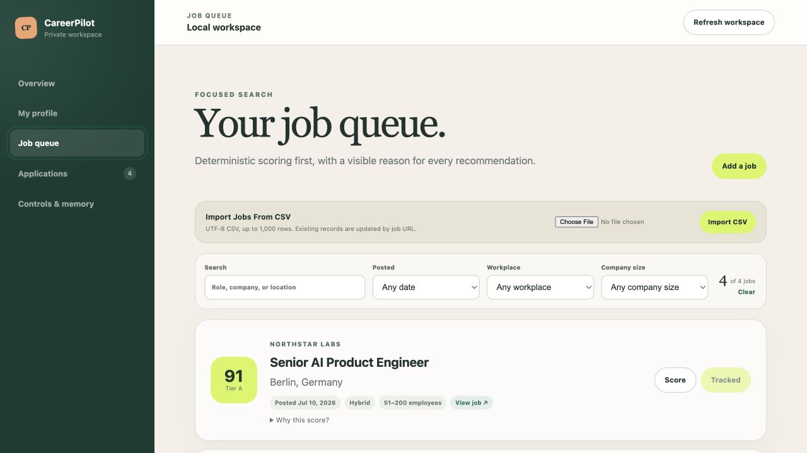
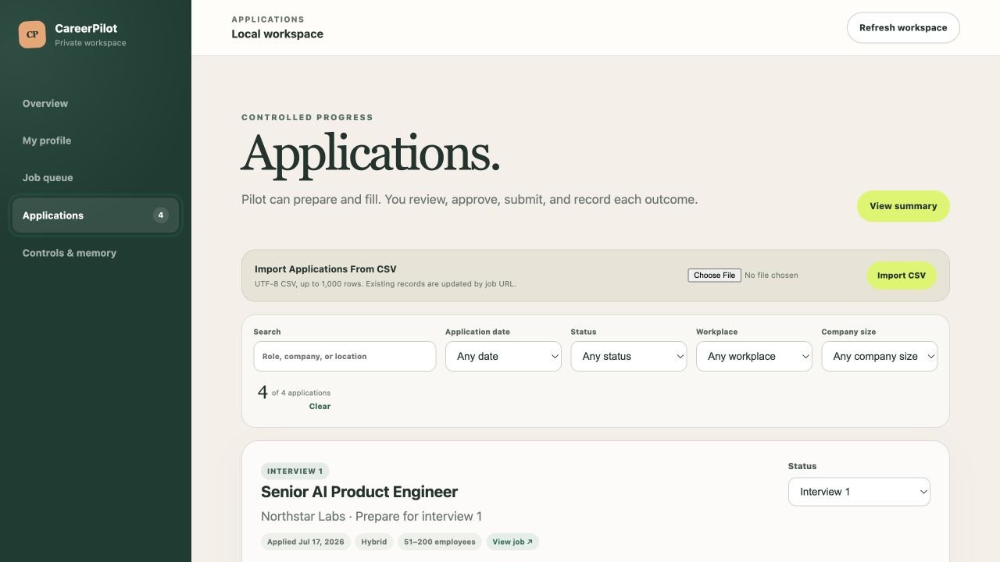
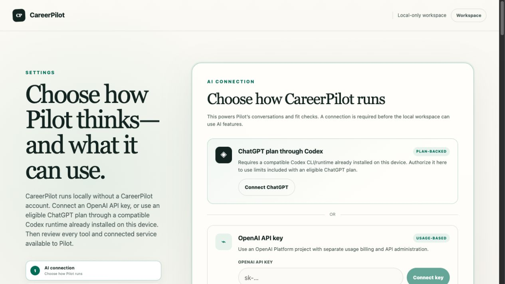
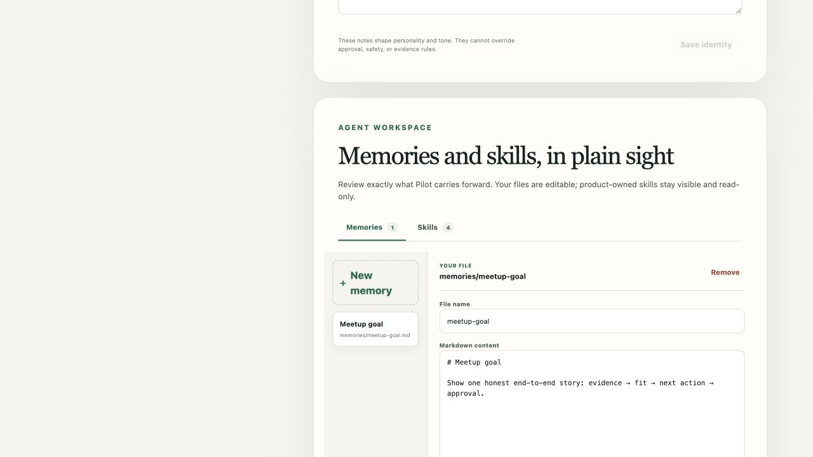

Context resets
The candidate keeps re-explaining goals, experience, and constraints.
The job-search agent that can show its work
A local-first career companion that remembers context, grounds feedback in evidence, and pauses before consequential actions.

The problem
Faster is not automatically betterGeneric AI makes candidates faster at producing words. It does not make those words defensible.
The candidate keeps re-explaining goals, experience, and constraints.
Advice sounds confident without showing which claim supports it.
Discovery, tailoring, tracking, and preparation live in separate tools.
A polished false claim or unreviewed submission can damage trust.
The product thesis
One agent, one evidence trail, one controlled loopToday: most of the workspace loop is real. The next milestone is conversational orchestration across the whole chain.
Actual product · conversation
Persistent sessions + personality + working contextName and SOUL notes shape tone without weakening safety rules.
Messages, CV text, role context, and fit checks persist locally.
The user sees the model, thinking effort, usage, and current context.

Actual product · grounded fit
Feedback with citations and an honesty boundary
The agent can say “you are close” without rewriting “close” into “experienced.”
Actual product · evidence workspace
The candidate owns the source of truthPDF or DOCX becomes editable claims with source excerpts.
Read-only project analysis creates improvements and interview questions.
Only confirmed facts can enter fit checks and tailored materials.

Actual product · operating workspace
From “maybe” to the next controlled action
Deterministic queue · reason for every score
Human-controlled pipeline · artifacts + outcomesActual product · customization
Not a fixed bot—a user-owned agent workspace
Identity + SOUL.md
Editable memory + skills · MCP allowlistsArchitecture and trust
Local by default · explicit at the boundarySQLite, CV evidence, jobs, applications, artifacts, conversations, revisions, audit events.
OpenAI through API key or ChatGPT/Codex. Model routes, MCP allowlists, and guarded local tools.
Public job sources, optional MCP services, approved form filling. Final submission stays manual.
Honest product status
Ready now · next build · later scaleFive-minute live demo
Use one story; avoid touring every screenThe demo succeeds if people remember the evidence boundary—not the number of features.
Launch CareerPilot ↗The promise
I’m building the career agent that can remember, act, propose improvements—and still tell you exactly why.
Feedback welcome · local-first alpha · final submission remains human